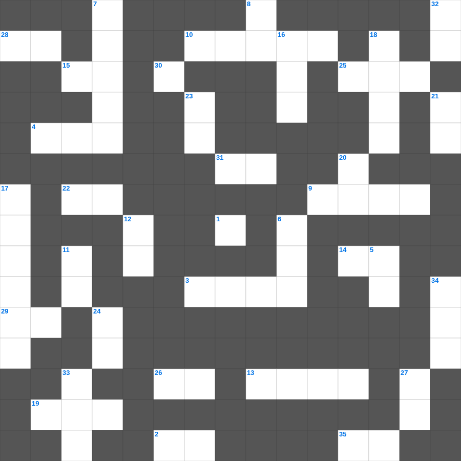

빌립보서 마스터 100 (2/2)
📌 서비스 정의
십자가로세로는 교회 주보와 주일학교에서 사용할 수 있는 성경 기반 가로세로 퍼즐 서비스입니다. 성경 인물, 사건, 핵심 구절을 바탕으로 제작되었습니다. 온라인 풀이 및 인쇄 기능을 제공합니다.
📖 빌립보서란?
빌립보서는 감옥에 갇힌 바울이 빌립보 교회에 보낸 서신으로, 어떤 상황에서도 그리스도 안에서 누리는 참된 기쁨을 강조합니다.
📚 빌립보서의 주요 사건·주제
그리스도의 겸손과 자기 비움(빌립보서 2장) · 복음을 위한 바울의 삶 · 그리스도를 아는 지식의 가치 · 참된 기쁨에 대한 권면 · 어떤 형편에든 자족함
오늘은 빌립보서의 주요 내용을 담은 빌립보서 성경 퍼즐를 준비했습니다. 총 35개의 힌트가 있으며, 주일학교 교재나 성경공부 자료로 활용하기 좋습니다. 무료로 즐기는 빌립보서 가로세로 퍼즐을 지금 바로 풀어보세요!

📝 가로 힌트
1. 우리가 세상에 아무것도 가지고 온 것이 없으매 또한 아무것도 가지고 가지 못하리니 우리가 먹을 것과 입을 것이 있은즉 이것한 줄로 알 것이니라
2. 가난한 자를 학대하는 자는 그를 지으신 이를 이것 하는 것이요
3. 풍랑을 향해 예수님이 명령하신 말
4. 이스라엘 자손이 범죄할 때마다 하나님이 이것하셨음
9. 다윗의 마지막 말 '이스라엘의 이것 노래하는 자'
10. 이스라엘이 가나안 족속을 쫓아내지 않아 그들이 이것이 됨
13. 우박 재앙 때 상하지 않은 두 작물
14. 사무엘의 어머니 이름
15. 애통하는 자는 복이 있나니 그들이 이것을 받을 것임이요
19. 룻이 보아스에게 한 말 '당신의 이것으로 시녀를 덮으소서'
22. 무리가 그들의 칼을 쳐서 이것을 만들고 그들의 창을 쳐서 낫을 만들 것이며
25. 다윗이 하나님께 드린 제사의 원리 '값 없이는 이것하지 않겠다'
26. 내 사랑하는 자는 노루와도 같고 어린 이것과도 같아서
28. 그는 멸시를 받아 사람들에게 버림받았으며 이것을 많이 겪었으며 질고를 아는 자라
29. 자기의 불법으로 말미암아 책망을 받되 말하지 못하는 이 짐승이 사람의 소리로 말하여 이 선지자의 미친 행동을 저지하였느니라
30. 염소와 송아지의 피로 하지 아니하고 오직 자기의 이것으로 영원한 속죄를 이루사 단번에 성소에 들어가셨느니라
31. 소제물을 구울 때 사용하는 도구 중 하나
35. 언약궤가 들어올 때 춤추는 다윗을 업신여긴 아내
📝 세로 힌트
5. 하나님이 명령하시지 않은 다른 불을 드려 죽은 아론의 아들
6. 좁은 문으로 들어가기를 이것하라
7. 입다의 딸이 산에 들어가 울었던 이유
8. 보아스가 성문에서 만난 사람 '아무개여 이것으로 오라'
11. 성령의 열매: 오래 참음, 자비, 이것
12. 이스라엘이 하나님을 버리고 섬긴 가나안 신
16. 야곱이 죽어서 묻힌 곳
17. 이새의 아들 다윗이 말하기를 '이것의 기름 부음 받은 자'
18. 나오미의 남편 이름
20. 야곱이 얍복 강가에서 밤새도록 한 것
21. 솔로몬이 금으로 만든 큰 방패의 개수
23. 베들레헴 여인들이 룻을 칭송하며 한 말 '일곱 이것보다 귀한 며느리'
24. 다윗의 승전가 '여호와는 나의 반석이시요 이것이시요'
27. 성도에게 단번에 주신 이것의 도를 위하여 힘써 싸우라는 편지
32. 베냐민 지파가 멸절 위기에서 아내를 얻은 장소
33. 그리하면 이것자가 나타나실 때에 시들지 아니하는 영광의 관을 얻으리라
34. 하나님의 말씀을 집 이것과 바깥 문에 기록하라
🧩 이 퍼즐에서 배우는 내용
이 퍼즐은 빌립보서 마스터 100 (2/2)의 핵심 단어와 개념을 자연스럽게 복습할 수 있도록 구성되었습니다. 주일학교 수업이나 개인 성경공부에서 학습 내용을 점검하는 용도로 바로 활용할 수 있습니다.
🧑🏫 교회 교육 자료 활용
이 퍼즐은 주일학교 교재 추천 자료로 활용할 수 있고, 주일학교 주보에 넣기 좋은 분량으로 구성되어 있습니다. 수업용 주일학교 교안에 활동지로 붙이거나, 예배 후 복습용 주일학교 공과교재로 바로 사용할 수 있습니다.
🏷️ 키워드
빌립보서 성경 퍼즐, 빌립보서, 십자가로세로, 성경퀴즈, 말씀퀴즈, 가로세로퍼즐, 주일학교 교재 추천, 주일학교 주보, 주일학교 교안, 주일학교 공과교재